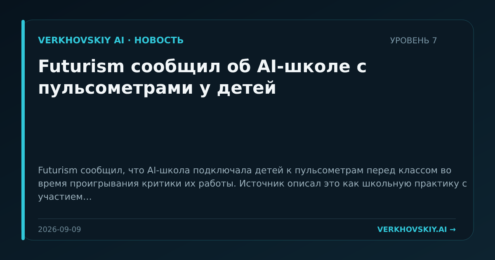

Futurism сообщил об AI-школе с пульсометрами у детей
Futurism сообщил, что AI-школа подключала детей к пульсометрам перед классом во время проигрывания критики их работы. Источник описал это как школьную практику с участием детей. Почему это важно: AI-образование начинает затрагивать не только учебные программы, но и телесные режимы контроля учащихся. Это расширяет поле споров об образовательной технологии до этики наблюдения.